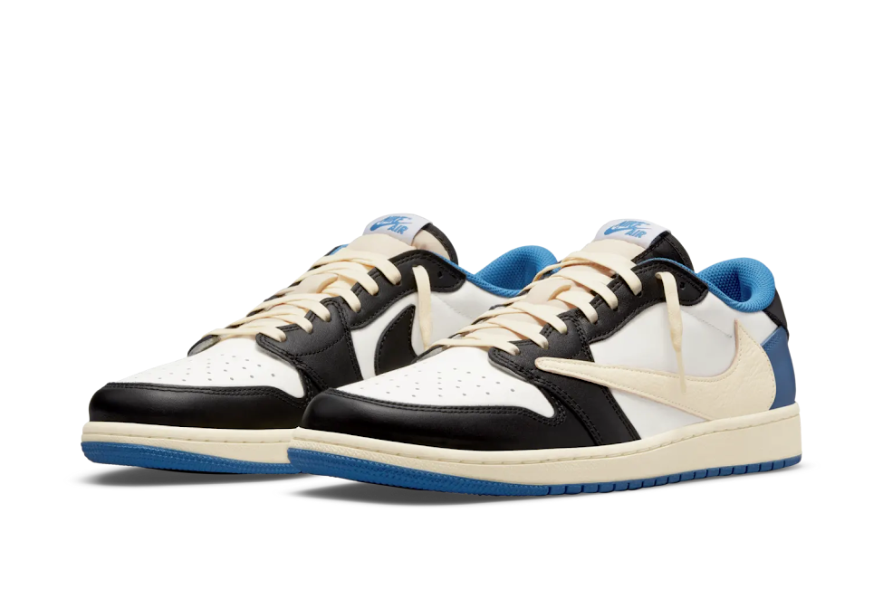

jordan 1 retro low og sp
fragment x travit scott
The Air Jordan 1 Low Fragment Desgin X Travit Scott nods to the original 2016 Air Jordan 1 Fragment with its simple color blocking. It features a smooth white leather upper with black and royal blue leather overlays. From there, a signature reversed Swoosh and yellowed soles add a cactus Jack flair to the classix silhouette.
